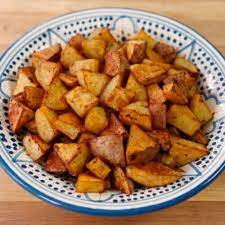

<h1>Chipped Potatoes</h1>



<p><b>Description</b></p>

<p>Ipso etc</p>

<p><b>Ingredients</b></p>

<ul>
<li>Olive oil</li>
<li>Oregano and salt</li>
<li>Potatoes</li>

</ul>

<p><b>Steps</b></p>

<ol>
<li>Heat oven</li>
<li>Peel and chop potatoes (one inch cubes)</li>
<li>Mix in oil, salt, oregano</li>
<li>Roast for 40 mins</li>
<li>Chips. Done. </li>

</ol>